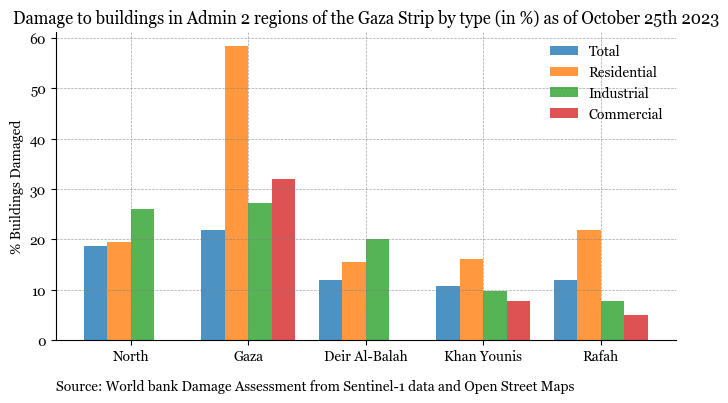
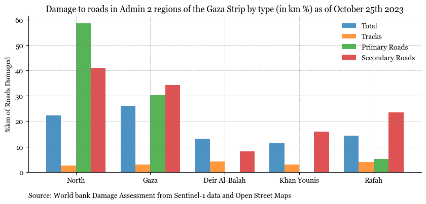

Visualizing damage to buildings in the Gaza Strip#
Note
The results shown in this analysis only reflect the damages until October 25th 2023. As the team completes further analysis, the notebook will be updated.
Damage Map#
You can now interact with this map by selecting/deselecting different damage layers to visualize where buildings are most impacted in the Gaza Strip. Upon visual inspection, you can see
Damages: You can select and deselect the layers to see damages to roads, buildings and points of interest. The damage value ranges between 0 and 1 with 1 indicating higher levels of damage
Conflict: You can select this layer to view areas wit reported events and fatalities
Summary Statistics#
Show code cell source
import numpy as np
import matplotlib.pyplot as plt
plt.rcParams["font.family"] = "Georgia"
df = damage_assessment_buildings.set_index('ADM2_EN')[['%', '%.1', '%.2', '%.3']][0:5]
df.rename(columns = {'%':'Total', '%.1':'Residential', '%.2':'Industrial', '%.3':'Commercial'}, inplace=True)
df1 = df.stack().reset_index()
df1.rename(columns = {'level_1':'damage_type', 0:'damage_percentage'}, inplace=True)
fig, ax = plt.subplots(figsize=(8,4))
# Number of groups and categories
n_groups = df1['ADM2_EN'].nunique()
n_categories = df1['damage_type'].nunique()
# Bar parameters
bar_width = 0.2
opacity = 0.8
index = np.arange(n_groups)
# Plotting bars for each category
for i, category in enumerate(df1['damage_type'].unique()):
category_values = df1[df1['damage_type'] == category]['damage_percentage'].values
ax.bar(index + i * bar_width, category_values, bar_width, alpha=opacity, label=category)
# Add labels and customization
ax.set_ylabel('% Buildings Damaged')
ax.set_xticks(index + bar_width * (n_categories - 1) / 2)
ax.set_xticklabels(df1['ADM2_EN'].unique())
ax.legend(frameon=False)
ax.spines['right'].set_visible(False)
ax.spines['top'].set_visible(False)
# Only show ticks on the left and bottom spines
ax.yaxis.set_ticks_position('left')
ax.xaxis.set_ticks_position('bottom')
ax.grid(which='both', linestyle='--', linewidth=0.5, color='gray', alpha=0.7)
ax.set_title('Damage to buildings in Admin 2 regions of the Gaza Strip by type (in %) as of October 25th 2023', font = 'Georgia', fontsize=12)
subtitle = 'Source: World bank Damage Assessment from Sentinel-1 data and Open Street Maps'
ax.text(0, -0.15, subtitle, ha='left', va='center', transform=ax.transAxes,
fontsize=10, color='black', weight='normal');

Show code cell source
df
| Total | Residential | Industrial | Commercial | |
|---|---|---|---|---|
| ADM2_EN | ||||
| North | 18.71 | 19.38 | 25.98 | 0.00 |
| Gaza | 21.93 | 58.33 | 27.24 | 31.94 |
| Deir Al-Balah | 11.80 | 15.50 | 20.11 | 0.00 |
| Khan Younis | 10.68 | 16.04 | 9.76 | 7.69 |
| Rafah | 11.83 | 21.77 | 7.69 | 4.96 |
Show code cell source
import numpy as np
import matplotlib.pyplot as plt
plt.rcParams["font.family"] = "Georgia"
df = damage_assessment_roads.set_index('ADM2_EN')[['%', '%.1', '%.2', '%.3']][0:5]
df.rename(columns = {'%':'Total', '%.1':'Tracks', '%.2':'Primary Roads', '%.3':'Secondary Roads'}, inplace=True)
df1 = df.stack().reset_index()
df1.rename(columns = {'level_1':'damage_type', 0:'damage_percentage'}, inplace=True)
fig, ax = plt.subplots(figsize=(10,4))
# Number of groups and categories
n_groups = df1['ADM2_EN'].nunique()
n_categories = df1['damage_type'].nunique()
# Bar parameters
bar_width = 0.2
opacity = 0.8
index = np.arange(n_groups)
# Plotting bars for each category
for i, category in enumerate(df1['damage_type'].unique()):
category_values = df1[df1['damage_type'] == category]['damage_percentage'].values
ax.bar(index + i * bar_width, category_values, bar_width, alpha=opacity, label=category)
# Add labels and customization
ax.set_ylabel('%km of Roads Damaged')
ax.set_xticks(index + bar_width * (n_categories - 1) / 2)
ax.set_xticklabels(df1['ADM2_EN'].unique())
ax.legend(frameon=False)
ax.spines['right'].set_visible(False)
ax.spines['top'].set_visible(False)
# Only show ticks on the left and bottom spines
ax.yaxis.set_ticks_position('left')
ax.xaxis.set_ticks_position('bottom')
ax.grid(which='both', linestyle='--', linewidth=0.5, color='gray', alpha=0.7)
ax.set_title('Damage to roads in Admin 2 regions of the Gaza Strip by type (in km %) as of October 25th 2023', font = 'Georgia', fontsize=12)
subtitle = 'Source: World bank Damage Assessment from Sentinel-1 data and Open Street Maps'
ax.text(0, -0.15, subtitle, ha='left', va='center', transform=ax.transAxes,
fontsize=10, color='black', weight='normal');

Show code cell source
df
| Total | Tracks | Primary Roads | Secondary Roads | |
|---|---|---|---|---|
| ADM2_EN | ||||
| North | 22.26 | 2.48 | 58.45 | 40.91 |
| Gaza | 26.01 | 3.03 | 30.23 | 34.22 |
| Deir Al-Balah | 13.20 | 4.07 | 0.00 | 8.15 |
| Khan Younis | 11.25 | 2.86 | 0.00 | 15.83 |
| Rafah | 14.27 | 4.03 | 5.14 | 23.51 |
Show code cell source
import numpy as np
import matplotlib.pyplot as plt
plt.rcParams["font.family"] = "Georgia"
fig, ax = plt.subplots(figsize=(8,4))
# Number of groups and categories
n_groups = df1['ADM2_EN'].nunique()
n_categories = df1['building_category'].nunique()
# Bar parameters
bar_width = 0.2
opacity = 0.8
index = np.arange(n_groups)
# Plotting bars for each category
for i, category in enumerate(['Communications Infrastructure', 'Educational Institutions',
'Places of Economic Activity']):
category_values = df1[df1['building_category'] == category]['percentage_damage'].values
ax.bar(index + i * bar_width, category_values, bar_width, alpha=opacity, label=category)
# Add labels and customization
ax.set_ylabel('% Damaged Places of Interest')
ax.set_xticks(index + bar_width * (n_categories - 1) / 2)
ax.set_xticklabels(df1['ADM2_EN'].unique())
ax.legend(frameon=False)
ax.spines['right'].set_visible(False)
ax.spines['top'].set_visible(False)
# Only show ticks on the left and bottom spines
ax.yaxis.set_ticks_position('left')
ax.xaxis.set_ticks_position('bottom')
ax.grid(which='both', linestyle='--', linewidth=0.5, color='gray', alpha=0.7)
ax.set_title('Damage to Places of Interest in Admin 2 regions of the Gaza Strip by type (in %) as of October 25th 2023', font = 'Georgia', fontsize=12)
subtitle = 'Source: World bank Damage Assessment from Sentinel-1 data and Open Street Maps \n Educational institutions include schools, universities, colleges and kindergartens \n Places of Economic Activity include malls, departmental stores and markets'
ax.text(0, -0.2, subtitle, ha='left', va='center', transform=ax.transAxes,
fontsize=10, color='black', weight='normal');

Show code cell source
df
| building_category | ADM2_EN | Communications Infrastructure | Educational Institutions | Places of Economic Activity | Water Infrastructure |
|---|---|---|---|---|---|
| 0 | Deir Al-Balah | 33.783784 | 48.214286 | NaN | NaN |
| 1 | Gaza | 31.715771 | 41.358025 | 31.25 | 0.0 |
| 2 | Khan Younis | 23.202614 | 36.082474 | 0.00 | 0.0 |
| 3 | North | 32.098765 | 38.461538 | NaN | 0.0 |
| 4 | Rafah | 37.575758 | 60.784314 | NaN | NaN |